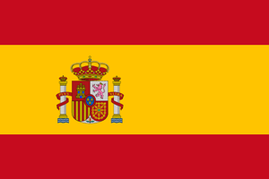

Добро пожаловать в страну вечного солнца и веселья, в страну, подарившую миру захватывающую корриду, зажигательное фламенко и великого Гауди. Здесь в каждом городе масса архитектурных памятников, парков и музеев, и, конечно же, здесь находятся одни из самых красивых пляжей на планете.
Испания на 90% расположена в гористой местности, а если быть точными, то на высоте 650 метров над уровнем моря. Ее столица является самой «высокой» в Европе.
Помимо гор, Испания может похвастаться двумя тысячами удивительных пляжей и рекордным количеством увеселительных заведений, которых насчитывается более 350 000! Ну и осталось только добавить, что количество солнечных дней здесь также бьет все рекорды и составляет порядка 280 ясных дней!
В новогоднюю ночь, когда на смену старому приходит новый год, принято съедать 12 виноградин, и непременно делать это следует под бой курантов. Каждая виноградина олицетворяет один из двенадцати месяцев, а проглоченная ягода обязательно принесет удачу и успех. В магазинах даже продают специальные наборы, включающие 12 красиво упакованных виноградин.
Теперь Храм Святого Семейства не успеют построить к 2026 году, как планировалось ранее.
Шедевр архитектурного искусства и одна из главных туристических достопримечательностей Испании строился почти 140 лет. При этом разрешение на строительство здание официально получило только в прошлом году.
Мадридская площадь Puerta del Sol (Ворота Солнца) – физический центр страны. Она отмечена как 0-й км испанской радиальной дорожной сети.
Барселона – не только один из самых красивых городов Испании, но еще и самый любимый среди туристов. Ежегодно его посещает около 15 миллионов гостей, которые приезжают сюда, чтобы насладиться архитектурными сооружениями, необычными музеями, фантастическими парками и галереями.
Испания – страна, в которой в любое время года ощущается праздник. Возможно, тому виной менталитет испанцев, считающих, что нет нужды думать о завтрашнем дне, если нужно жить сегодня.
Реал Мадрид – самая дорогая спортивная команда в мире. Годовой доход клуба составляет $690 млн, а стоимость бренда – $ 3,6 млрд. Непримиримый соперник «Барселона» занимает второе место в этом списке с ценой $ 3,5 млрд.
«Барселона» — самый титулованный клуб в Испании по общему количеству официальных трофеев — 75. Также «Барселона» входит в число трёх команд, не покидавших высший испанский дивизион.